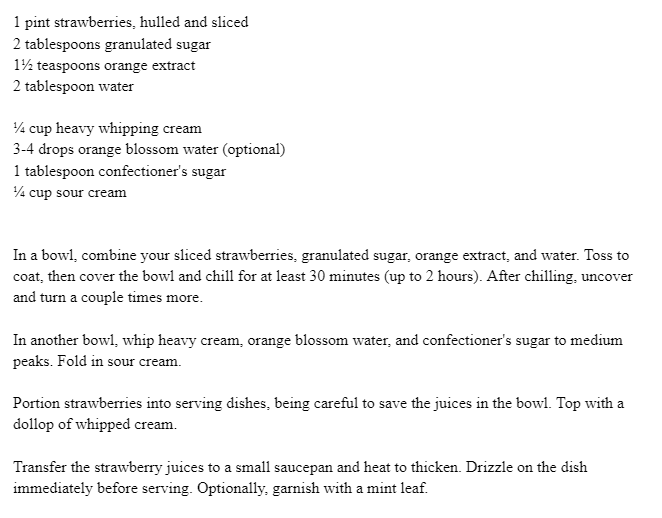

A long time favorite, my family first found this delectable dish at a French restaurant when we celebrated my oldest sister’s high school graduation. A few years’ search led us to a recipe, which we tweaked to perfection! This dessert centered around fresh strawberries is a bright tangy contrast to the sweet baked goods typical of the Christmas season. - David Walton
